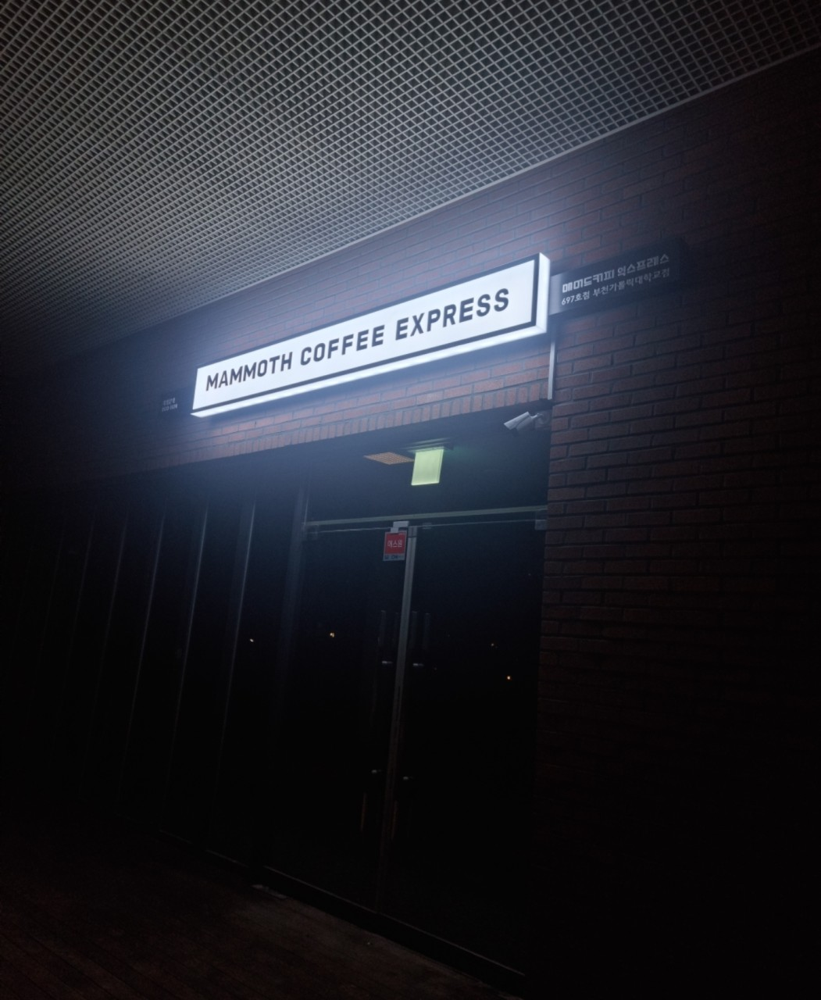
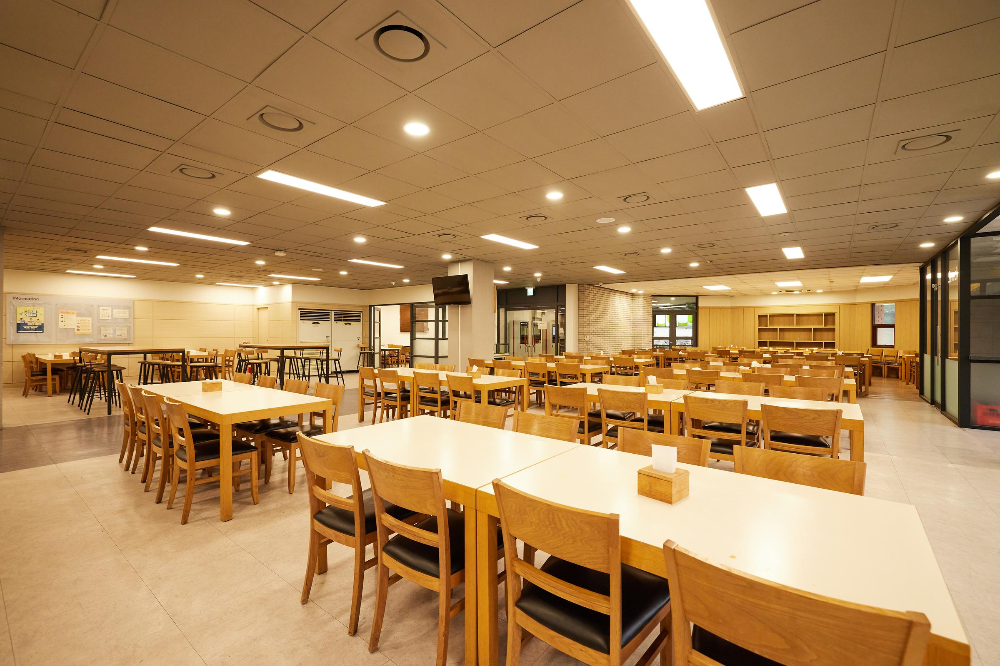
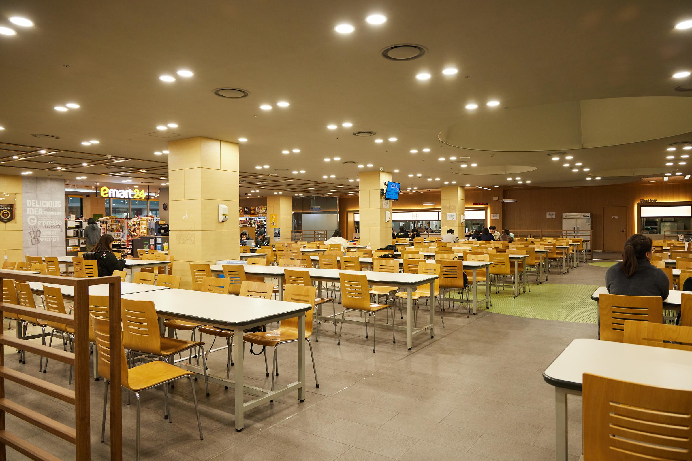

카페
시원한 커피를 마실 수 있는 매머드커피
달달한 커피를 마시며 시간을 보내는 공간

이 장소가 의미 있는 이유
- 정문에서 바로 갈 수 있기에 거리가 가까움
- 테이크아웃을 하면 리유저블 컵으로 주기에 다 마시고 반납하면 됨
여기에서 해볼 것
- 시원한 커피를 리유저블컵으로 마셔보기
- 자리가 있다면 안에서도 마셔보기
식당
맛있는 음식을 먹을 수 있는 식당

다양한 메뉴가 있어서 내가 먹고 싶은 음식을 정할 수 있는 자유
이 장소가 의미 있는 이유
- 매일 달라지는 메뉴로 지루함이 없이 먹을 수 있음
- 그리고 1층과 2층에 따로 운영해서 원하지 않는 메뉴가 있으면 다른 것을 고를 수도 있음
여기에서 해볼 것
- 1층에서는 음료나 디저트도 나오기에 먹어보기
- 2층에서 먹을 경우 부족하다면 플러스메뉴도 시켜서 먹어보기
편의점
없는 게 없는 편의점
필요한 것이 있거나 간단하게 먹을 것을 살 수 있는 공간

이 장소가 의미 있는 이유
학교 안에서 가장 빠르게 갈 수 있는 편의점이면서 바로 옆이 식당이라서 앉을 공간이 많음
여기에서 해볼 것
- 먹고 싶은 간식 사먹어보기
- 도시락, 빵, 김밥 등으로 간단하게 끼니 해결하기